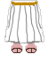

FANDOM
| Home |
| Infierno |
| Cielo |
| Mallus |
| Eflige |
| Infirmus |
| Buskerud |
| Bestias |
| Caribdis |
| Hush |
| Roktar |
| Angeles Corrompidos |
| Angel |
| Arcanjo |
| Heilige |
El cielo es el lugar donde vive Hasika, dios de todo lo que existe. Antes de la ruptura de la puerta, era un lugar hermoso, lleno de jardines y angeles que los cuidaban. Sin embargo, cuando se rompió la puerta, todo esto cambió. Centenares de Demonios invadieron el cielo, obligando a Hasika a hacer lo que jamas fue hecho: pedir ayuda a un mortal
Dios
Chambi
